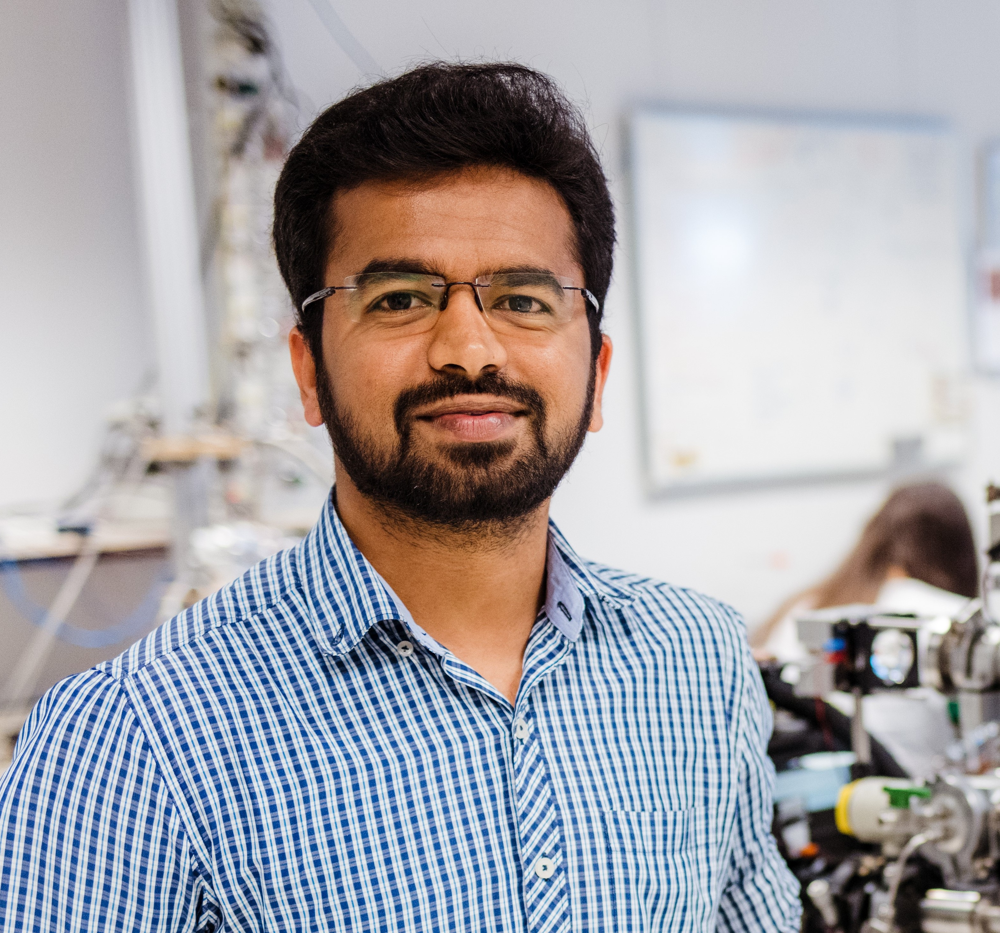
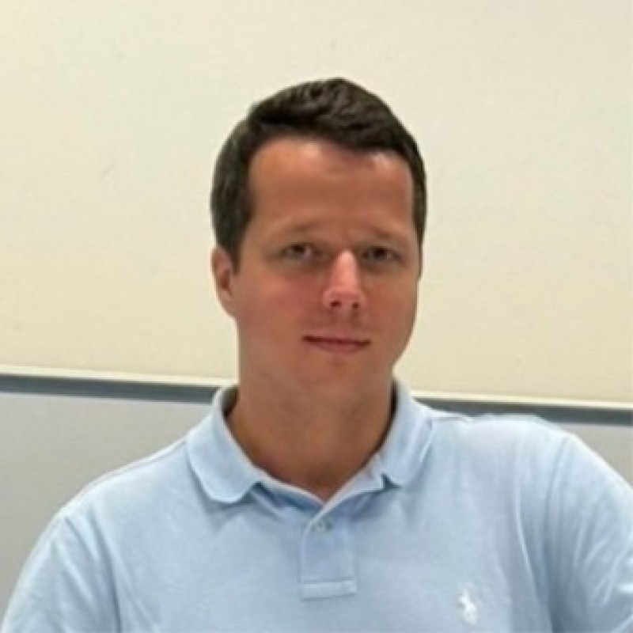

Dr. Abhishek Purandare
Assistant Professor · University of Twente
Research on interfacial heat and mass transfer, CO₂ phase-change phenomena, cryogenic processes, and supercritical heat transfer.
Heat Transport & Interfacial Phase-Change Physics
Researchers and students contributing to our Lab's work on heat transport, fluid flow, and interfacial phase-change physics.

Assistant Professor · University of Twente
Research on interfacial heat and mass transfer, CO₂ phase-change phenomena, cryogenic processes, and supercritical heat transfer.
PhD Candidate · Starting Feb 2027
Deposition of solid CO2 on a cold surface under representative flue gas conditions for cryogenic carbon capture application.

PhD Candidate · Co-advised with Prof. M. Shahi
Development of a lab-scale heat storage reactor using thermochemical materials manufactured through an in-air microfluidic technique.

MSc Student
Quantitative visualization of frost formation and CO₂ desublimation on cold surfaces.

MSc Student
Direct numerical simulations of heat transfer and fluid flow under supercritical CO₂ conditions.

MSc Graduate · 2026 (in collaboration with ASML)
Linking meniscus variation to local thermal resistances in flat-grooved heat pipes.

MSc Graduate · 2025
Cooling characteristics of supercritical CO₂ flow in a tube subjected to extreme heat fluxes.
MSc Graduate · 2025
Development of a Binary Fluid Test Bench for Investigating Phase Change Transport Phenomena